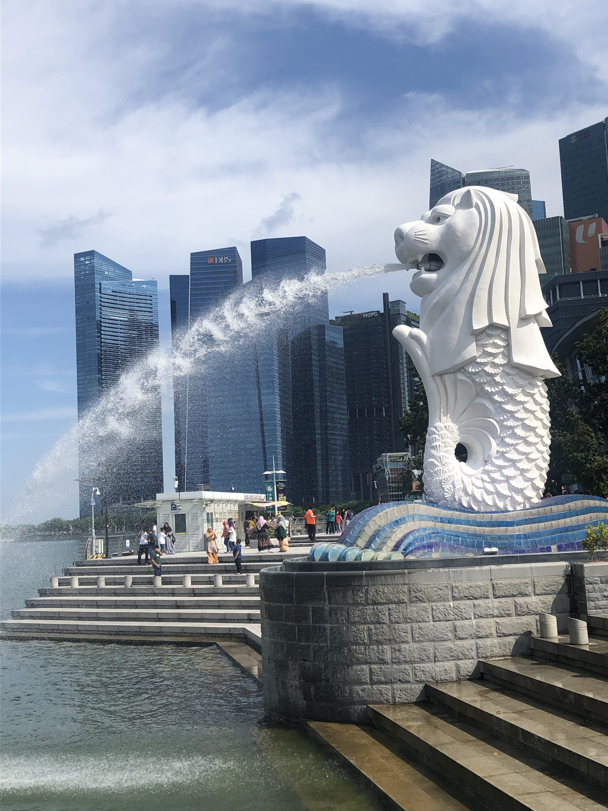

私のおすすめ旅行先BEST3
1位 シンガポール

多民族国家というのもあり、少し街を歩くだけで、中華系、インド系、アフリカ系など様々な街並みを見ることができる。
法律が厳しため、観光地は比較的綺麗です。
レストランでご飯を食べると高いが庶民の出店に行くと安くて美味しい料理がたくさん食べれます。
シンガポールは第２次世界大戦時、日本の占領下にあったので、博物館へ足を運ぶと海外から見た日本を知ることができて、日本の学校では学べない歴史も知ることができます。
何より英語がほとんど通じるので、英語の勉強で海外へいきたい最初の一歩としてはとてもおすすめです。
2位 マレーシア
マレーシアは、実は結構多くの日本人が住んでいたりしていて、ご飯も美味しく住みやすいという意味ではとても良いです。
東京都で一人暮らしする家賃で、ジムとプール付きのマンションに住めたりもします。
日本人でサッカーが好きなら、絶対に行って欲しい場所がマレーシアにあります！
それが写真の「ジョホールバルスタジアム」です。
このスタジアムは、日本が初めてワールドカップ出場を決めた「ジョホールバルの歓喜」の舞台になったスタジアムです。
実は、スタジアムの中に日本代表のメモリアルギャラリーがあります。
また、ジョホールバルの地元のチームも日本代表のように、世界へ羽ばたくという願掛けもあって、非常に日本と親交のあるスタジアムです。
何より驚いたのが、マレーシアはたびたびゲリラ豪雨が起こるので、スタジアムの芝の管理がとても大変なのですが、日本の技術と専属の芝職人さんがいて、
現地ではとても有名な日本人の方だそうです。日本の技術や魂を感じる場所なので、ぜひ足を運んでみてください。
3位 ベトナム
ご飯の美味しさはダントツでベトナムです。
バインミー、バインセオ、春巻きなど日本でも食べれるお店もありますが、ベトナムの家庭料理が特に美味しかったです。
ベトナムは、日本の高齢化社会とは逆で若い年齢の人が多い国です。
1年経つだけで、景色ががらりと変わるくらい、今発展している国です。
国とIT企業で街を作る取り組みをしたりと社会主義国ならではの発展もしているので、発展の仕方も独特です。
とてもフレンドリーで優しい人が多く、家族を大切にしている文化がとても強いので、いい人がとても多いです。（※ただし繁華街で声をかけてくる人には注意）
物価も安いので、余暇をゆっくり過ごすには最適な場所です。